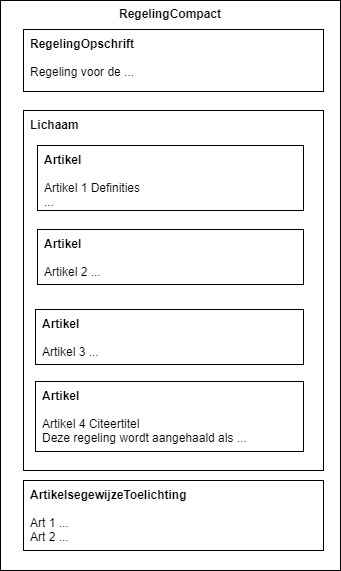
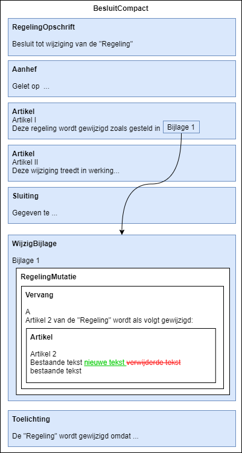

Het compacte model
Soorten compacte regelingen
Voor een BesluitCompact is het mogelijk om een aantal typen regeling door te geven:
RegelingCompact(een regeling met een artikelstructuur)RegelingTijdelijkdeel(een regeling met specifieke toepassingen)RegelingVrijetekst(een regeling met vrijetekst, geen artikelstructuur)
Structuur RegelingCompact
Een RegelingCompact is artikelsgewijs en heeft een opbouw zoals hieronder. Alle onderdelen zijn consolideerbaar en daarom wit getekend.

Muteren van een compacte regeling met BesluitCompact
Compacte regelingen kunnen uitsluitend met een BesluitCompact worden gewijzigd. Wijzigingen worden daarin altijd opgenomen binnen een WijzigBijlage. Hierdoor worden ongeacht het soort regeling wijzigingen op een eenduidige wijze doorgegeven.
Een voorbeeld van de structuur van een BesluitCompact die de initiële versie van de bovenstaande RegelingCompact instelt:

In tegenstelling tot het klassieke model worden wijzigingen voor een regeling niet doorgegeven binnen een (Wijzig-)Artikel. Deze wijzigingen staan altijd in een element RegelingMutatie binnen een WijzigBijlage:

Een speciale voorziening om een artikel met wijzigingen te kunnen consolideren is daarmee niet nodig.